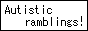
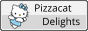

This webring currently has 6 members
| Button | Name | Address | Join Date | Favorite Operating System |
|---|---|---|---|---|
|  | sosumi.xyz | kurosroom.nekoweb.org | 24/02/2025 | "Macintosh System 7" |
 |
trickmint.gay | trickmint.gay | 24/02/2025 | "Windows 7" |
|  | Pizzacat Delights | pizzacatdelights.nekoweb.org | 07/05/2025 | "Windows 7" |
| twentyphanday | https://twentyphanday.nekoweb.org/ | 31/07/2025 | "Windows XP" | |
| lapispabel.net | https://lapislabel.net/ | 31/07/2025 | "Windows 7" | |
| Kim's Blog | https://kimberlygb.nekoweb.org | 31/07/2025 | "Windows XP" | |